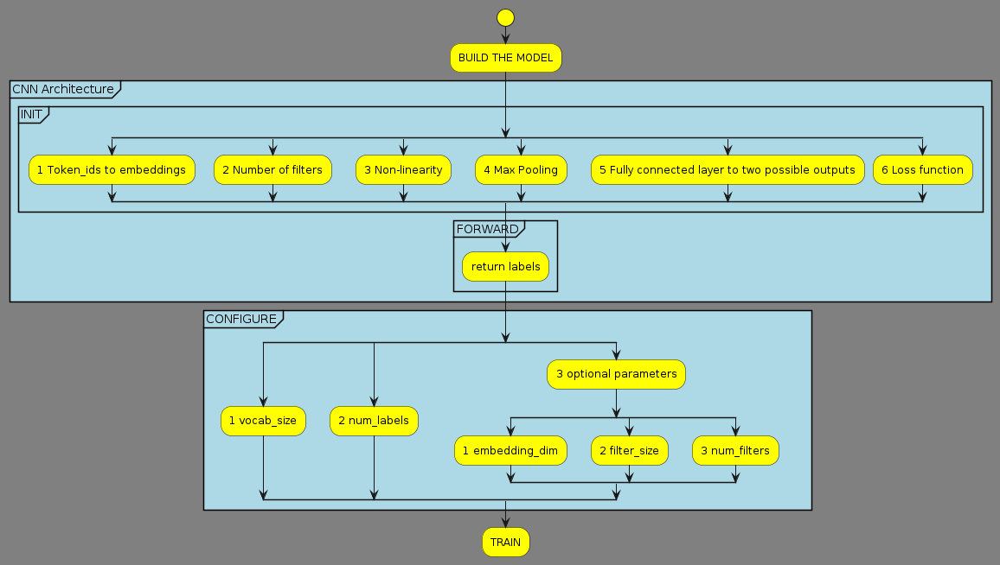

Your task is to carefully study the notebooks, and write a step-by-step summary of key steps to train and evaluate such a model. Keep in mind that many of these steps will be applicable throughout the course, even if the specific model differs. Therefore, it is essential to grasp the key concepts. As most of the code is shared in these two notebooks, writing just one summary is enough, but in the model building part, you should refer to both CNN/RNN implementations.
Setup
in this phase install via pip:
transformers is a popular deep learning packagedatasets provides support for loading, creating, and manipulating datasetsevaluate is a library for easily evaluating machine learning models and datasetsaccelerate is a wrapper we need to install in order to train torch models using a transformers trainerinstall all of the above:
!pip3 install -q transformers datasets evaluate accelerate
pprint to formulate prints for some data structuresfrom pprint import PrettyPrinter
pprint = PrettyPrinter(compact=True).pprint
logging to reduce transformers verbose logging ops. Remove this to get all low level info alsoimport logging
logging.disable(logging.INFO)
datasets and download for example the imdb dataset from huggingfaceimport datasets
#https://huggingface.co/docs/datasets/main/en/package_reference/loading_methods#datasets.load_dataset
dataset = datasets.load_dataset("imdb")
print(dataset)
DatasetDict({
train: Dataset({
features: ['text', 'label'],
num_rows: 25000
})
test: Dataset({
features: ['text', 'label'],
num_rows: 25000
})
unsupervised: Dataset({
features: ['text', 'label'],
num_rows: 50000
})
})
dataset = dataset.shuffle() #This is never a bad idea, datasets may have ordering to them, which is not what we want
#del dataset["unsupervised"] Delete the unlabeled part of the dataset to make things faster
import transformers
# Text in IMDB dataset in english, use the bert-cased
MODEL = "bert-base-cased"
tokenizer = transformers.AutoTokenizer.from_pretrained(MODEL)
def tokenizer(dataset_entry: dict) --> dict:
return tokenizer(dataset_entry["text"],
max_length=128, #limits the maximum length of outputs to the given length
truncation=True) # faster train and potential performance gains
# https://huggingface.co/docs/transformers/preprocessing#everything-you-always-wanted-to-know-about-padding-and-truncation
dataset = dataset.map(tokenizer)
import torch
BasicConfig = transformers.PretrainedConfig #nice way to start
Token IDs are mapped to embeddings of a user-specific size (config.embedding_dim) in a torch.nn.Embedding layer. Typically initialized with previously leanerd weights, here starts with random
# SELF HERE MEANS THE MODEL CLASS, ALL COMES TOGETHER IN THE END UNDER ONE CLASS :-)
# Embedding layer: vocab size x embedding dim
self.embeddings = torch.nn.Embedding(
num_embeddings=config.vocab_size,
embedding_dim=config.embedding_dim
)
Number of filters, specified by the user is applied to the matrix formed by the sequence of token embedding in a convolution layer (think these filters with the image example)
# Convolution layer:
self.convolution = torch.nn.Conv1d(
config.embedding_dim,
config.num_filters,
config.filter_size,
padding=1
)
The outputs of the convolution layers are passed through a non-linear activation function. ere the simple ReLU (torch.nn.ReLU) which thresholds each value at 0 ($\textrm{max}(0,x)$, i.e. any value < 0 is set to 0)
# Activation function following convolution
self.activation = torch.nn.ReLU()
The outputs are max-pooled globally using torch.nn.AdaptiveMaxPool1d, taking only the largest value output by each of the filters (after the activation function). Generaters translational invariance: the pooled output contains information on how well each filter "matched" the input, but not where that "match" was found.
Translational invariance, means that a model will produce the same result for a given input image, regardless of where the features are located within the image. CNNs are invariant to small translation of features within an image, and this is due to the use of max-pooling operations. source -- HERE IMAGE EXAMPLE IS USED BUT SAME FOR TEXT --
# Pooling layer: global max pooling, regardless of input length
self.pooling_layer = torch.nn.AdaptiveMaxPool1d(
output_size=1
)
Fully connected layer (torch.nn.Linear) that maps the pooled values to the two possible output values
# Output layer: num filters to output size
self.output_layer = torch.nn.Linear(
in_features=config.num_filters,
out_features=config.num_labels
)
Loss function of the classification: torch.nn.CrossEntropyLoss
self.loss = torch.nn.CrossEntropyLoss()
forward passes to the next layer or returns output
config = BasicConfig(
vocab_size = tokenizer.vocab_size,
num_labels = len(set(dataset['train']['label'])),
embedding_dim = 64,
filter_size = 3,
num_filters = 10,
)
model = SimpleCNN(config)
vocab_size is always the size of the tokenizernum_labels is number of unique labels in the dataoptional are adjustable hyperparameters of which:
embedding_dim is the size of the word embeddings (token)filter_size the size of the convolution filter (for picture think of height x width window) here only one dimension height (n-grams)

num_filters COUNT of different convolution filters
import torch
BasicConfig = transformers.PretrainedConfig #nice way to start
Token id's are mapped to embeddings of a user-specific size defined in config.embedding_dim parameter in a in a torch.nn.Embedding layer. Weights initialized randomly
self.embeddings = torch.nn.Embedding(
num_embeddings=config.vocab_size,
embedding_dim=config.embedding_dim
)
Embedded imputs are passed through an RNN (torch.nn.RNN) which produces a series of outputs ($(y_1, \ldots, y_n)$, where $n$ is the length of the input) and the final hidden state $h_n$. Here, we will only use the last output $y_n$.
self.rnn = torch.nn.RNN(
input_size=config.embedding_dim,
hidden_size=config.hidden_size,
num_layers=config.num_layers,
nonlinearity=config.nonlinearity,
batch_first=True
)
The output of RNN is connected to fully connected layer (torch.nn.Linear) that maps the last RNN output to the two possible values of the classifier
self.output_layer = torch.nn.Linear(
in_features=config.hidden_size,
out_features=config.num_labels #desired amount of labels
)
Classification is run through a loss function
self.loss = torch.nn.CrossEntropyLoss() #same as CNN
For RNN the forward function acts a little different from CNN where it only goes forward
Embed the ids
x = self.embeddings(input_ids)
set the size of the batch to x
batch_size = x.shape[0]
set the initial hidden state to zeroes
h0 = torch.zeroes((self.config.num_layers, batch_size, self.config.hidden_size),
device=input_ids.device # place on same device as input
)
Run RNN repeatedly to get sequence of outputs rnn_outputs and the final hidden state h_n
rnn_outputs, h_n = self.rnn(x,h0)
Get the last output y_n
# get the actual last output
y_n = rnn.outputs[:,-1,:]
Map to outputs with fully connected layer
output = self.output_layer(y_n)
Return as in MLP or CNN
# Return value computed as in MLP and CNN:
if labels is not None:
# We have labels, so we can calculate the loss
return (self.loss(output,labels), output)
else:
# No labels, so just return the output
return (output,)

config = BasicConfig(
vocab_size = tokenizer.vocab_size,
num_labels = len(set(dataset["train"]["label"])),
embedding_dim = 64,
hidden_size = 96,
num_layers = 1,
nonlinearity = "tanh",
)
model = SimpleRNN(config)
vocab_size always the vocabulary size of the tokenizernum_labels desired amount of labelsembedding_dim size of word (== token) embeddingshidden_size size of the hidden h vector of RNNnum_layers number of stacked RNN layersnonlinearity the non-linear function to apply, here tanh is chosenUse hf trainer class
workflow:
Specify hyperparamenters and other settings for training
learning_rate the step size for weight updatesper_device_train_batch_size number of examples per batchmax_steps the max number of steps to train for# https://huggingface.co/docs/transformers/en/main_classes/trainer
trainer_args = transformers.TrainingArguments(
"checkpoints",
evaluation_strategy="steps",
"""
eval_strategy (str or IntervalStrategy, optional, defaults to "no") — The evaluation strategy to adopt during training. Possible values are:
"no": No evaluation is done during training.
"steps": Evaluation is done (and logged) every eval_steps.
"epoch": Evaluation is done at the end of each epoch.
"""
logging_strategy="steps",
"""
logging_strategy (str or IntervalStrategy, optional, defaults to "steps") — The logging strategy to adopt during training. Possible values are:
"no": No logging is done during training.
"epoch": Logging is done at the end of each epoch.
"steps": Logging is done every logging_steps.
"""
load_best_model_at_end=True,
"""
(bool, optional, defaults to False) — Whether or not to load the best model found during training at the end of training. When this option is enabled, the best checkpoint will always be saved. See save_total_limit for more.
"""
eval_steps=500,
"""
(int or float, optional) — Number of update steps between two evaluations if eval_strategy="steps". Will default to the same value as logging_steps if not set. Should be an integer or a float in range [0,1). If smaller than 1, will be interpreted as ratio of total training steps.
"""
logging_steps=500,
"""
(int or float, optional, defaults to 500) — Number of update steps between two logs if logging_strategy="steps". Should be an integer or a float in range [0,1). If smaller than 1, will be interpreted as ratio of total training steps.
"""
learning_rate=0.001,
"""
(float, optional, defaults to 5e-5) — The initial learning rate for AdamW optimizer.
"""
per_device_train_batch_size=8,
"""
(int, optional, defaults to 8) — The batch size per GPU/XPU/TPU/MPS/NPU core/CPU for training.
"""
max_steps=2500,
"""
(int, optional, defaults to -1) — If set to a positive number, the total number of training steps to perform. Overrides num_train_epochs. For a finite dataset, training is reiterated through the dataset (if all data is exhausted) until max_steps is reached.
"""
)
Create metric for evaluation of performance during and after training.
#https://pypi.org/project/evaluate/
import evaluate
#https://huggingface.co/spaces/evaluate-metric/accuracy
#Accuracy = (TP + TN) / (TP + TN + FP + FN)
accuracy = evaluate.load("accuracy")
"""
to instantiate an evaluation module
"""
def compute_accuracy(outputs_and_labels):
outputs, labels = outputs_and_labels
predictions = outputs.argmax(axis=-1) #TODO: check if it does use numpys argmax?
return accuracy.compute(predictions=predictions, references=labels)
data_collator = transformers.DataCollatorWithPadding(tokenizer)
# Argument gives the number of steps of patience before early stopping
early_stopping = transformers.EarlyStoppingCallback(
early_stopping_patience=5
)
TODO: ANALYZE THIS
from collections import defaultdict
class LogSavingCallback(transformers.TrainerCallback):
def on_train_begin(self, *args, **kwargs):
self.logs = defaultdict(list)
self.training = True
def on_train_end(self, *args, **kwargs):
self.training = False
def on_log(self, args, state, control, logs, model=None, **kwargs):
if self.training:
for k, v in logs.items():
if k != "epoch" or v not in self.logs[k]:
self.logs[k].append(v)
training_logs = LogSavingCallback()

model is the CLASS of the modelargs is the training argumentstrain_dataset is the train split of the dataseteval_dataset is the test split of the datasetcompute_metrics is the function made in evaluation blockdata_collator is the call made to transformers.DataCollatorWithPadding(tokenizer)callbacks array containing early_stopping requirement and training_logs logger for analysing the training processesEvaluate and print out the results
eval_results = trainer.evaluate(dataset["test"])
pprint(eval_results)
print('Accuracy:', eval_results['eval_accuracy'])
%matplotlib inline
import matplotlib.pyplot as plt
def plot(logs, keys, labels):
values = sum([logs[k] for k in keys], [])
plt.ylim(max(min(values)-0.1, 0.0), min(max(values)+0.1, 1.0))
for key, label in zip(keys, labels):
plt.plot(logs["epoch"], logs[key], label=label)
plt.legend()
plt.show()
plot(training_logs.logs, ["loss", "eval_loss"], ["Training loss", "Evaluation loss"])